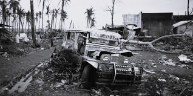
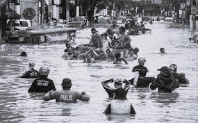

Typhoons

A typhoon is a formidable tropical cyclone characterized by sustained winds of at least 74 mph (119 km/h). Forming over warm ocean waters, it brings intense winds, heavy rainfall, storm surges, and flooding, posing significant risks to coastal areas and infrastructure, often causing widespread devastation.

How do typhoons form?

Typhoons form over warm ocean waters when atmospheric conditions are conducive, including high humidity, low wind shear, and the Coriolis effect. As warm air rises, it creates an area of low pressure, drawing in more warm air. This process continues, feeding the storm and intensifying it into a powerful cyclone.